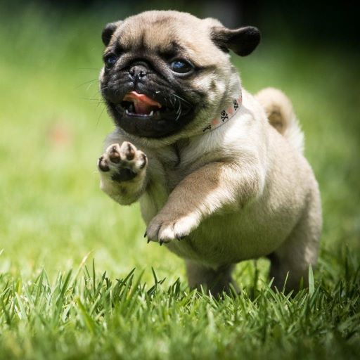
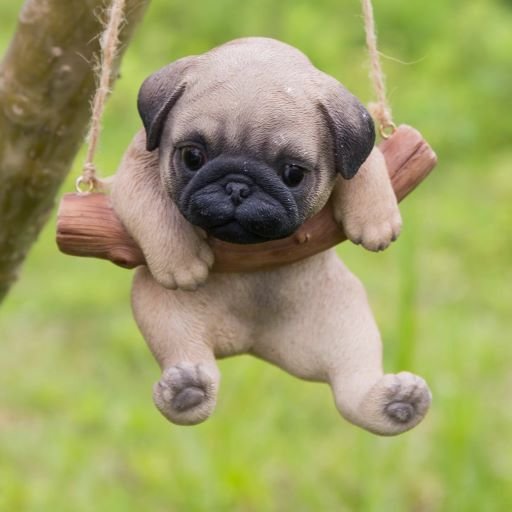

Мопсы относятся к декоративным породам и принадлежат к группе собак-компаньонов. Собаки с уравновешенным и спокойным характером подходят для жизни в городе, преданы хозяину и хорошо уживаются с детьми. Мопсы не требуют особого ухода, поэтому их рекомендуется заводит владельцам без опыта содержания собак.
Корни этой декоративной породы уходят глубоко в историю Древнего Китая. Мопсов держали в императорском дворце. Изображения породы, которые дошли до наших дней, датируются VI-IV веками до н.э. Китайцы видели в складках на лбу особый смысл, потому что они напоминали иероглифы. Поэтому эта особенность специально закреплялась в породе во время разведения. Позволить содержать такую породу могли далеко не все, лишь приближенные к правителю придворные. Маленьким мопсам создавали королевские условия с собственными покоями и королевским питанием. Для них выделяли не только охрану, но и слуг, которые заботились об императорских животных. Во времена великих географических открытий активно развивались торговые отношения. Кроме шелка и пряностей в XV-XVI веках с Востока в Европу завезли китайских собачек «Ло Цзе». Сначала их называли «Китайским мастифом», а затем переименовали в «Мопса». Особую популярность порода получила в Голландии во время войны с Испанией. Мопс разбудил короля Вильгельма, когда на спящий город стал наступать враг. Хозяин остался жив, а мопс стал символом королевской семьи. Порода стала распространяться по королевствам Европы. Через пару столетий популярность мопсов утихла, собак становилось все меньше. В 1864 для королевы Англии Виктории с трудом смогли отыскать последнюю собаку мопса. Это стало отправной точкой для создания клуба, посвященного разведению мопсов. Благодаря этому порода сохранилась, стала улучшаться и в 1888 году приобрела единый стандарт. Поэтому считается, что современные мопсы имеют английское происхождение.
Собаки такой породы очень дружелюбны. Они станут отличными компаньонами и преданными членами семьи. Позволяют брать себя на руки и гладить. Мопсы спокойно относятся к детям, даже если с ними будут обходиться не очень аккуратно. В юном возрасте мопсы активны и любят играть. Это длится примерно до трех лет. По мере взросления собаки приобретают спокойный характер, а любимым делом становятся посиделки с хозяином. Питомец сильно привязывается к владельцам и совсем не любит одиночество. Не рекомендуется оставлять надолго мопса одного. Одна из черт характера мопса — упрямство. Мопсы любят добиваться своего и не очень любят, когда заставляют что-либо делать. Стоит аккуратно относиться к дрессировке и не повышать голос на животное, иначе можно закрепить нелюбовь к выполнению команд. Если мопс вдруг не захочет идти домой, возможно из-за усталости, придется взять его на руки. Добродушные мопсы радуются незнакомым людям, а также собакам и кошкам. Их смело можно оставить с соседями на время отпуска. Собаки такой породы очень любят внимание, но при этом не станут привлекать его лаем и другими капризами. Если питомец захочет ласки, он подойдет к владельцу и пристроится рядом.
Вот и узнали немного о мопсах
Хочешь узнать больше? Кликай на кнопку внизу